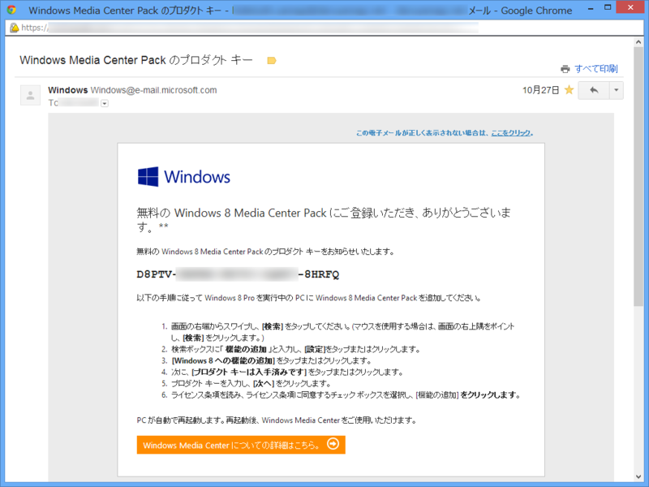
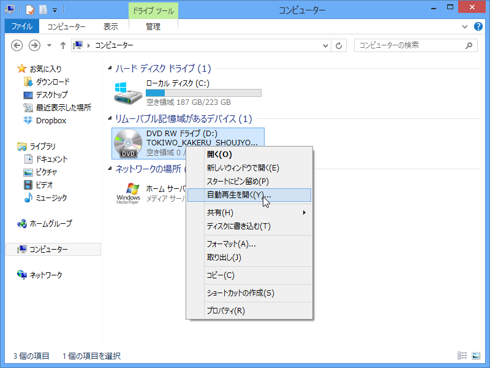
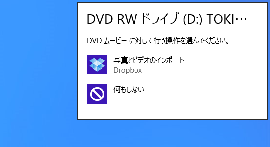
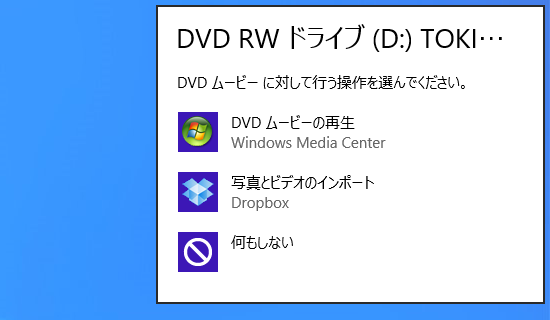
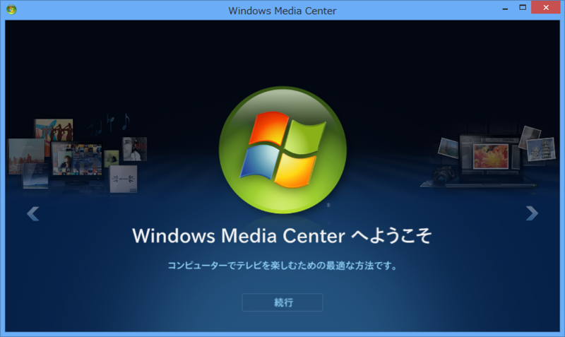
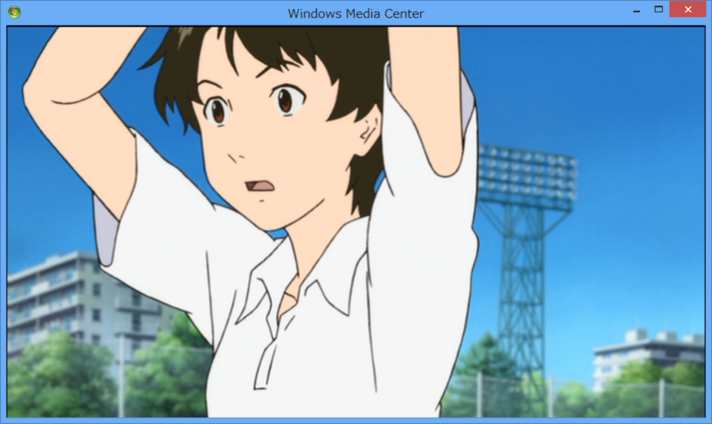

無料（期間限定）でゲットできる「Windows 8 Media Center Pack」で Windows 8 の DVD 再生環境を！
公開日：

故あって Windows 8 Pro を再インストールしたのだけど、窓の杜 - 【NEWS】Microsoft、「Windows 8 Media Center Pack」を期間限定で無償提供 の存在を忘れていた。プロダクトキーのメールが来ていた*1のでインストールしてみた。

インストールは、案内通り［Windows 8 への機能の追加］からプロダクトキーを入力するだけ。10分程度かかったかな。再起動は一回だけだった。

［自動再生］メニューで選べるアプリに……

適用前

適用後
ちゃんと「Windows Media Center」が追加されたよ！


手近にあった『時をかける少女』を再生してみたけど、ちゃんと観れる。まぁ、こんな面倒なことをしなくても「VLC media player」なんかをダウンロードしてインストールすればいいのだけど、ああいうのには DVD のリッピング機能なんかもついているらしく、法律的にどーたらこーたら。ちゃんと正規の手段が用意されているのなら、それに如くはないね。
*1:申請して一日ぐらいはかかるみたい？ 今はもうちょっとスムーズかな